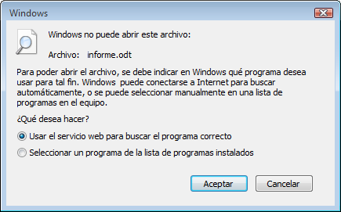

Leyendo documentos ODF (*.odt, *.ods, *.odp) con Apache OpenOffice
 # {.rfloatimg}
“Windows no puede abrir este archivo”
¿Le suena esto familiar?
Cuando intenta abrir un documento ODF (Open Document Format) sin tener instalado en su sistema una aplicación que pueda abrir este formato, Windows le mostrará el diálogo mostrado arriba y solicitará información acerca de con qué aplicación debe abrir el documento.
Si esto le sucede, podemos ayudarlo. Apache OpenOffice es una premiada suite de oficina de código libre que puede abrir tanto documentos en formato ODF (Start Office, OpenOffice.org, NeoOffice, LibreOffice,…) como de Microsoft Office.
¿Qué es un documento ODF?
ODF es un formato para guardar documentos de oficina, y está basado en un estándar ISO internacional creado en el 2006. Los documentos ODF tienen las siguientes extensiones:
- *.odt (documentos de procesador de textos)
- *.ods (documentos de libros de hojas de cálculo)
- *.odp (documentos de presentaciones)
- *.odb (documentos de base de datos)
- *.odg (documento de la aplicación de dibujo vectorial)
La ventaja de ODF es que no está atado a ninguna aplicación de oficina particular. Es un estándar abierto que cualquier compañía puede implementar en sus programas. OpenOffice usa el formato ODF como el formato estándar para sus documentos. Muchos otros programas, de reciente realización tienen también soporte para importar y exportar en el formato ODF.
Apache OpenOffice
Apache OpenOffice es la suite ofimática de código abierto líder para el procesamiento de palabras, hojas de cálculo, presentaciones, gráficos, bases de datos y más. Publicada por la Fundación Apache (Apache Software Foundation), una organización sin fines de lucro. OpenOffice está disponible en muchos idiomas y trabaja en los sistemas operativos más comunes. OpenOffice puede trabajar con documentos ODF como así también documentos de creados en otros paquetes de oficina. Puede ser descargado y utilizado para cualquier propósito de forma completamente gratuita.
Si desea saber más sobre Apache OpenOffice, puede mirar aquí.
Entonces, ¿qué necesito para leer mi documento ODF?
Descargar Apache OpenOffice e instalarlo en su computadora. Sólo necesitará unos minutos para descargarlo e instalarlo. Una vez instalado podrá abrir y editar documentos ODF y de otros muchos formatos.